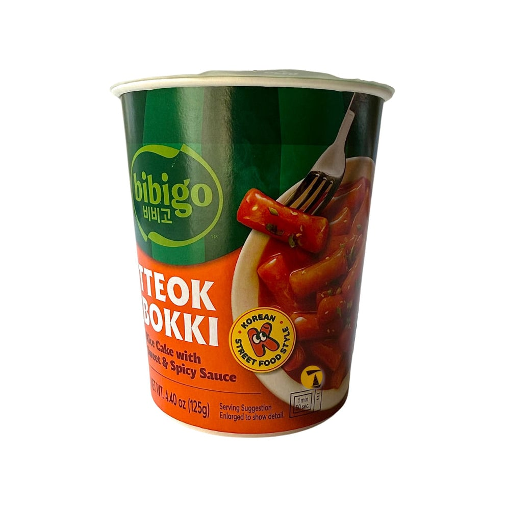
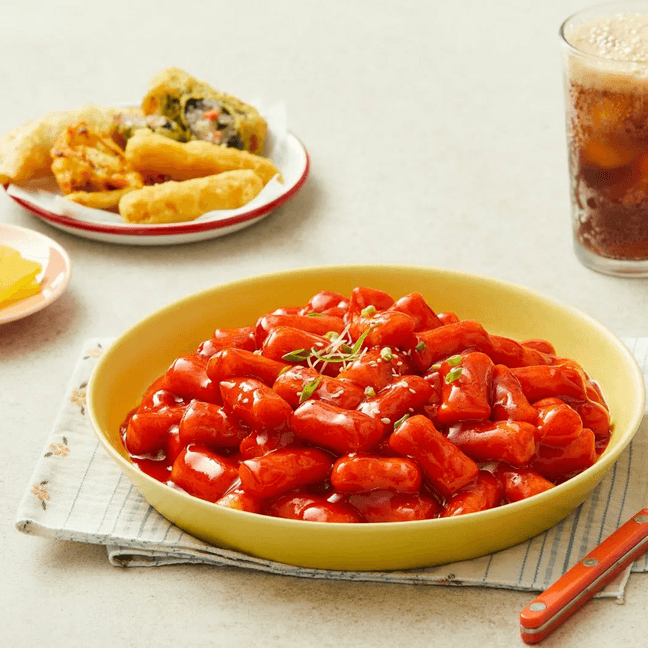
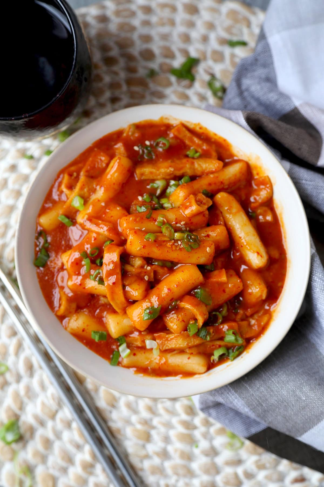

<div> <table style="border-collapse: collapse; width: 99.9809%;" border="1"><colgroup><col style="width: 49.9522%;"><col style="width: 49.9522%;"></colgroup> <tbody> <tr> <td> <div><span style="font-size: 14pt;"><strong>Roluri de orez cu sos dulce si condimentat Bibigo, 125g</strong></span></div> <div><span style="font-size: 14pt;">Poftă de ceva bun și rapid? Bibigo Tteokbokki la pahar &icirc;ți aduce gustul legendar al street-food-ului coreean oriunde te-ai afla. Doar adaugi puțină apă, &icirc;l pui la microunde și te bucuri instant de textura moale a orezului și de sosul dulce-picant perfect echilibrat. Rapid, practic și delicios!</span></div> </td> <td></td> </tr> <tr> <td></td> <td><span style="font-size: 14pt;">Bucură-te de o porție generoasă de tteokbokki exact ca pe străzile din Seul! Prăjiturile din orez, perfect gumașe, sunt &icirc;nvăluite &icirc;ntr-un sos roșu, lucios și irezistibil de dulce-picant. Un preparat plin de savoare, ideal de savurat alături de gustările tale prăjite preferate pentru o experiență completă.</span></td> </tr> <tr> <td><span style="font-size: 14pt;">Trăiește experiența autentică a bucătăriei coreene cu o farfurie caldă de tteokbokki reconfortant. Sosul bogat și catifelat &icirc;mbracă perfect batoanele moi din orez și feliile fragede de pește, oferind acel mix legendar de iute și dulce. Gustarea ideală pentru o seară de film sau momente de răsfăț.</span></td> <td></td> </tr> </tbody> </table> </div>